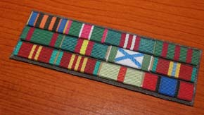
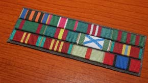

Відзнаки Внутрішніх військ
Символіка та відзнаки Внутрішніх військ МВС України
ЕМБЛЕМА ТА ПРАПОР ВВ
Указом Президента України від 28 січня 2002 року № 75 «Про символіку Внутрішніх військ Міністерства внутрішніх справ України» встановлено емблему та прапор ВВ.
Емблема Внутрішніх військ Міністерства внутрішніх справ України являє собою прямий рівносторонній хрест з розбіжними кінцями крапового кольору і пружками білого металу. У центрі хреста вміщено зображення емблеми Міністерства внутрішніх справ України.
Прапор Внутрішніх військ Міністерства внутрішніх справ України являє собою прямокутне полотнище синього кольору із співвідношенням сторін 2:3. У центрі полотнища розміщено зображення емблеми Внутрішніх військ Міністерства внутрішніх справ України. Висота емблеми становить 2/3 висоти полотнища, а ширина – 1/2 ширини полотнища.
Емблема та прапор ВВ МВС України є офіційними відмітними символами, що вказують на належність до Внутрішніх військ.
Емблема ВВ встановлюється в кабінеті командувача, в залі засідань Головного управління Внутрішніх військ, використовується на прапорі, в емблемах управлінь територіальних командувань, з’єднань, військових частин та вищих навчальних закладів, у вигляді знаків розрізнення на форменому і спеціальному одязі військовослужбовців, відомчих заохочувальних відзнаках, бланках службової документації, печатках, транспортних і спеціальних засобах, будинках і спорудах Внутрішніх військ.
Прапор ВВ встановлюється в кабінеті командувача, на будинках і спорудах Внутрішніх військ.
Зображення символіки ВВ допускається при оформленні будинків і споруд, на друкованій, інформаційній та сувенірній продукції, відомчих заохочувальних відзнаках, нагрудних знаках військовослужбовців Внутрішніх військ, кіно-, відео- і фотоматеріалах, що видаються (виготовляються) Головним управлінням Внутрішніх військ або на його замовлення.
Нагрудний знак «Внутрішні війська»
Нагрудний знак «Внутрішні війська» запроваджений 1997 року, наказом МВС України від 21 лютого 2002 року № 163 встановлено, що він є ознакою належності військовослужбовців до служби у Внутрішніх військах Міністерства внутрішніх справ України, невід’ємним елементом форми одягу військовослужбовця ВВ МВС України.
Право на носіння нагрудного знака мають всі військовослужбовці Внутрішніх військ Міністерства внутрішніх справ України після складання ними Військової присяги, а також військовослужбовці, переведені до ВВ з інших збройних формувань України.
Знак являє собою вінок із лаврового листя, на який покладено два схрещені мечі вістрями вгору, два списи і фігурний червоно-білий щит з геральдичною композицією: навколо малого Державного герба України розміщено зображення восьмикутної зірки (символ спеціальних моторизованих військових частин міліції), геральдичного лева (символ військових частин спеціального призначення), геральдичної башти з символічним зображенням орбіт електронів (символ військових частин з охорони АЕС, важливих державних об’єктів та спеціальних вантажів), арбалета (символ військових частин з конвоювання, екстрадиції та охорони підсудних).
Ця композиція також символізує якості воїнів ВВ: чесність та непідкупність, силу та мужність, непохитну стійкість, пильність та постійну боєздатність.
У верхній частині знака розміщено зображення Державного прапора України, у нижній частині – стрічка з написом «ВНУТРІШНІ ВІЙСЬКА».
На обмундируванні знак розміщується з правого боку грудей нижче орденів, ліворуч відомчих відзнак МВС України, знаків про закінчення навчальних закладів та інших знаків.
НАГОРОДИ ВНУТРІШНІХ ВІЙСЬК МВС УКРАЇНИ
Нагрудний знак Внутрішніх військ Міністерства внутрішніх справ України «За зразкову службу» І та ІІ ступеня
Нагрудний знак Внутрішніх військ Міністерства внутрішніх справ України «За зразкову службу» двох ступенів.
Уже в перші роки розбудови Внутрішніх військ незалежної України їх командування перейнялося питанням заохочення особового складу та його мотивації до зразкового виконання професійних обов’язків.
Нагрудний знак військ внутрішньої та конвойної охорони МВС України «За зразкову службу» став першою військовою відзнакою, заснованою у незалежній Україні наказом Міністра внутрішніх справ. Нагородження даною відзнакою впроваджувалось у 1993–1996 рр.
Коли ж Внутрішнім військам було повернуто історичну назву, друге життя отримала й відзнака. Затверджений наказом МВС України № 163 від 21.02.2002 року нагрудний знак ВВ МВС України «За зразкову службу» має два ступеня.
Нагрудним знаком II ступеня можуть бути нагороджені військовослужбовці, що відзначились під час виконання завдань бойової служби, виявили сумлінне ставлення до виконання військового обов’язку, продемонстрували високі результати у бойовій і гуманітарній підготовці. Право нагороджувати таким знаком мають начальники управлінь територіальних командувань, командири з’єднань і військових частин, начальники військових навчальних закладів за поданням командирів підрозділів.
Нагрудним знаком І ступеня нагороджує командувач Внутрішніх військ МВС України за поданням командирів з’єднань і частин, начальників військових навчальних закладів. Нагрудним знаком І ступеня нагороджуються військовослужбовці, які виконали більш як 200 завдань бойової служби з оцінкою «відмінно» і вже були відзначені нагрудним знаком II ступеня. Імена військовослужбовців, удостоєних нагрудного знака І ступеня, заносяться в Книгу Пошани частини, їм також надається перевага при призначенні на вищі вакантні посади та при зарахуванні до військових навчальних закладів Внутрішніх військ МВС України.
Нагрудний знак носиться з правого боку грудей, праворуч відзнак МВС України та знаків про закінчення навчальних закладів, послідовно, починаючи з І ступеня.
Відомча заохочувальна відзнака Міністерства внутрішніх справ України – Хрест Пошани «За розбудову та становлення Внутрішніх військ МВС України»
Відомча заохочувальна відзнака Міністерства внутрішніх справ України – Хрест Пошани «За розбудову та становлення Внутрішніх військ МВС України».
Затверджена у 2008 році. Застосовується для нагородження військовослужбовців та ветеранів Внутрішніх військ, працівників органiв внутрішніх справ МВС, представників державних органів влади та місцевого самоврядування, підприємств та організацій, які зробили значний внесок у розбудову та становлення Внутрішніх військ МВС України, зміцнення їх авторитету серед народу України.
Відзнакою Хрест Пошани «За розбудову та становлення Внутрішніх військ МВС України» нагороджує командувач Внутрішніх військ МВС України за поданням начальників управлінь ГУВВ, територіальних командувань, командирів з’єднань, військових частин та начальників військових навчальних закладів.
Разом з нагрудним знаком та посвідченням вручається місячне грошове забезпечення. Особа, нагороджена даною відзнакою користується перевагою при зарахуванні до військових навчальних закладів ВВ МВС України, її прізвище заноситься в Книгу Пошани частини.
Відзнака носиться на правому боці грудей i розміщується нижче відзнак Президента в ряд, зліва направо після відзнак МВС – Почесного знака та «За відзнаку в службі».
Відомча заохочувальна відзнака Міністерства внутрішніх справ України – медаль «Ветеран Внутрішніх військ МВС України»
Відомча заохочувальна відзнака Міністерства внутрішніх справ України – медаль «Ветеран Внутрішніх військ МВС України».
Затверджена у 2002 році. Відзнакою нагороджуються генерали, офіцери, прапорщики та військовослужбовці, що проходять службу за контрактом у Внутрішніх військах МВС України, які є взірцем вірності Військовій присязі, досягли високих показників у бойовій та спеціальній підготовці, сумлінно виконують службові обов’язки та мають вислугу в календарному обчисленні 25 років та більше.
Нагородження відзнакою здійснюється наказами Міністра внутрішніх справ України, командувача Внутрішніх військ МВС України двічі на рік з нагоди святкування Дня Внутрішніх військ МВС України та Дня незалежності України.
Відзнака носиться на парадній формі одягу з лівого боку грудей і розміщується нижче державних нагород України, нагород колишнього СРСР, державних нагород інших країн, відомчих нагород МВС України в ряд – зліва направо.
На повсякденній формі одягу її заміщує колодка встановленого зразка.
Відомча заохочувальна відзнака Міністерства внутрішніх справ України – медаль «За відзнаку в службі у Внутрішніх військах МВС України» трьох ступенів
Відомча заохочувальна відзнака Міністерства внутрішніх справ України – медаль «За відзнаку в службі у Внутрішніх військах МВС України» трьох ступенів.
Затверджена у 2002 році.
ІІІ ступінь – медаль «За 10 років бездоганної служби у Внутрішніх військах МВС України»;
ІІ ступінь – медаль «За 15 років бездоганної служби у Внутрішніх військах МВС України»;
І ступінь – медаль «За 20 років бездоганної служби у Внутрішніх військах МВС України».
Відзнакою нагороджуються генерали, офіцери, прапорщики та військовослужбовці, що проходять службу за контрактом у Внутрішніх військах МВС України за умови бездоганної служби, вчасного присвоєння військового звання, позитивної атестації, відсутності дисциплінарного стягнення, які прослужили в календарному обчисленні відповідно 10, 15, 20 років.
Нагородження відзнакою здійснюється наказами Міністра внутрішніх справ України, командувача Внутрішніх військ МВС України двічі на рік з нагоди святкування Дня Внутрішніх військ МВС України та Дня незалежності України.
Нагородження відзнакою проводиться послідовно від ІІІ до І ступеня.
Відзнака носиться на парадній формі одягу з лівого боку грудей і розміщується нижче державних нагород України, нагород колишнього СРСР, державних нагород інших країн, відомчих нагород МВС України в ряд – зліва направо.
На повсякденній формі одягу її заміщує колодка встановленого зразка.
Відомча заохочувальна відзнака Міністерства внутрішніх справ України – медаль «За співпрацю із Внутрішніми військами МВС України»
Затверджена у 2002 році. Застосовується для нагородження військовослужбовців та ветеранів Внутрішніх військ, працівників органів внутрішніх справ МВС України, представників державних органів влади та місцевого самоврядування, підприємств та організацій, які зробили значний внесок у розбудову та становлення Внутрішніх військ МВС України, зміцнення їх авторитету серед народу України.
Відзнакою нагороджує командувач Внутрішніх військ МВС України за поданням начальників управлінь ГУВВ, територіальних командувань, командирів з`єднань, військових частин та начальників військових навчальних закладів, голів ветеранських організацій.
Відзнака носиться на правому боці грудей і розміщується нижче відзнак Міністра внутрішніх справ України в ряд – зліва направо після «Почесного знака МВС України» та «За відзнаку в службі».
Відомча заохочувальна відзнака Міністерства внутрішніх справ України – медаль «10 років Внутрішнім військам МВС України» та відомча пам’ятна відзнака Міністерства внутрішніх справ України – медаль «15 років Внутрішнім військам МВС України»
Відомча заохочувальна відзнака Міністерства внутрішніх справ України – медаль «10 років Внутрішнім військам МВС України» та відомча пам’ятна відзнака Міністерства внутрішніх справ України – медаль «15 років Внутрішнім військам МВС України».
Затверджені відповідно у 2002 р. та 2007 р. Даними відзнаками нагороджуються працівники органів внутрішніх справ, генерали, офіцери, прапорщики та військовослужбовці, що проходять службу за контрактом, які мають високі показники у бойовій та професійній підготовці, зразково виконують службові обов’язки і за станом на 26 березня 2002 року та 26 березня 2007 року перебували на службі у Внутрішніх військах МВС України, а також ветерани Внутрішніх військ, громадяни України та іноземні громадяни, які зробили вагомий внесок у справу розбудови Внутрішніх військ МВС України.
Відзнаки носяться на парадній формі одягу з лівого боку грудей. Розміщуються нижче державних нагород України, нагород колишнього СРСР, державних нагород інших країн, зліва направо після відомчих заохочувальних відзнак Міністра внутрішніх справ України, медалей «Ветеран Внутрішніх військ МВС України» та «За бездоганну службу у Внутрішніх військах МВС України».
На повсякденній формі одягу їх заміщують колодки встановленого зразка.
Заохочувальна відзнака Внутрішніх військ Міністерства внутрішніх справ України «За доблесну службу» І та ІІ ступеня
Заохочувальна відзнака Внутрішніх військ Міністерства внутрішніх справ України «За доблесну службу» двох ступенів.
Затверджена у 2010 році. Застосовується для нагородження офіцерів, військовослужбовців військової служби за контрактом Внутрішніх військ МВС України за старанність, ініціативу та вмілі дії, виявлені ними під час виконання завдань бойової служби, а також за сумлінне ставлення до виконання військового обов’язку, високі результати в бойовій і гуманітарній підготовці; ветеранів Внутрішніх військ, працівників органів внутрішніх справ МВС України, представників державних органів влади та місцевого самоврядування, підприємств та організацій, які зробили значний внесок у виконання службово-бойових завдань Внутрішніх військ МВС України, зміцнення їх авторитету серед народу України.
Має два ступені, вищим з яких є І ступінь. Нагородження проводиться послідовно, починаючи з ІІ ступеня.
Відзнакою нагороджує командувач Внутрішніх військ МВС України за поданням начальників управлінь територіальних командувань, навчальних та медичних закладів, командирів з’єднань і військових частин, голів ветеранських організацій.
Відзнака Внутрішніх військ Міністерства внутрішніх справ України «Мужність, честь, закон»
Відзнака Внутрішніх військ Міністерства внутрішніх справ України «Мужність, честь, закон».
Затверджена у 2002 році. Заснована для нагородження працівників органів внутрішніх справ, військовослужбовців Внутрішніх військ, які під час виконання завдань бойової служби здійснили вчинок, пов’язаний з ризиком для життя, виявили особисту мужність, рішучість, сміливість, непідкупність, чим сприяли захисту життя, честі і гідності громадян України, припиненню або попередженню протиправних дій, злочину, знищення чи розкрадання матеріальних цінностей.
Відзнакою нагороджує командувач Внутрішніх військ МВС України за поданням начальників управлінь територіальних командувань, командирів з’єднань, частин та начальників військових навчальних закладів.
Разом із відзнакою та посвідченням нагородженому вручається одноразова грошова винагорода у розмірі одного посадового окладу. Нагороджений даною відзнакою військовослужбовець користується перевагою при призначенні на вищі вакантні посади та при зарахуванні до військових навчальних закладів Внутрішніх військ МВС України, його прізвище заноситься в Книгу Пошани частини.
Відзнака носиться на парадній формі одягу з правого боку грудей і розміщується після відомчих нагород МВС України в ряд – зліва направо.
Зразки нагород

10 років "За бездоганну службу у ВВ"

15 років "За бездоганну службу у ВВ"

20 років "За бездоганну службу у ВВ"

10 років ВВ МВС України (ювілейна)

15 років ВВ МВС України (ювілейна)

20 років ВВ МВС України (ювілейна)

«За доблесну в службу» ВВ МВС І ст.

«За доблесну в службі» ВВ МВС II ст.

"25 років Чорнобилю" ВВ

«За співпрацю з внутрішніми військами МВС України”

Хрест пошани за розбудову ВВ МВС України

“Ветеран внутрішніх військ МВС України"

Нагрудний знак «Барс»

Нагрудний знак «Внутрішні війська України»

Нагрудний знак «За зразкову службу» ІІ ст.

Нагрудний знак «За зразкову службу» І ст.

Нагрудний знак «Мужність, Честь, Закон»